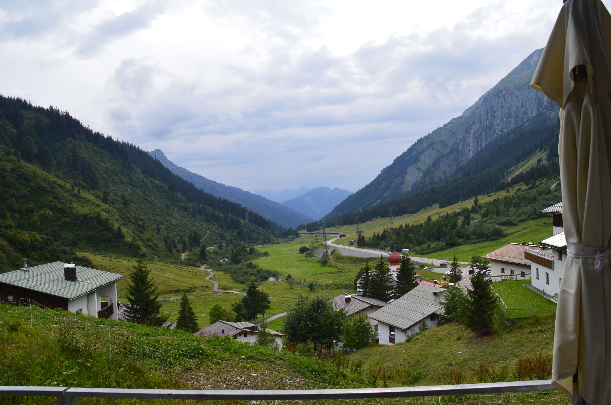
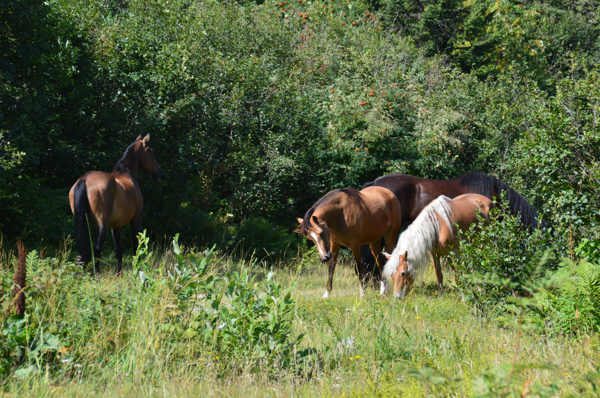
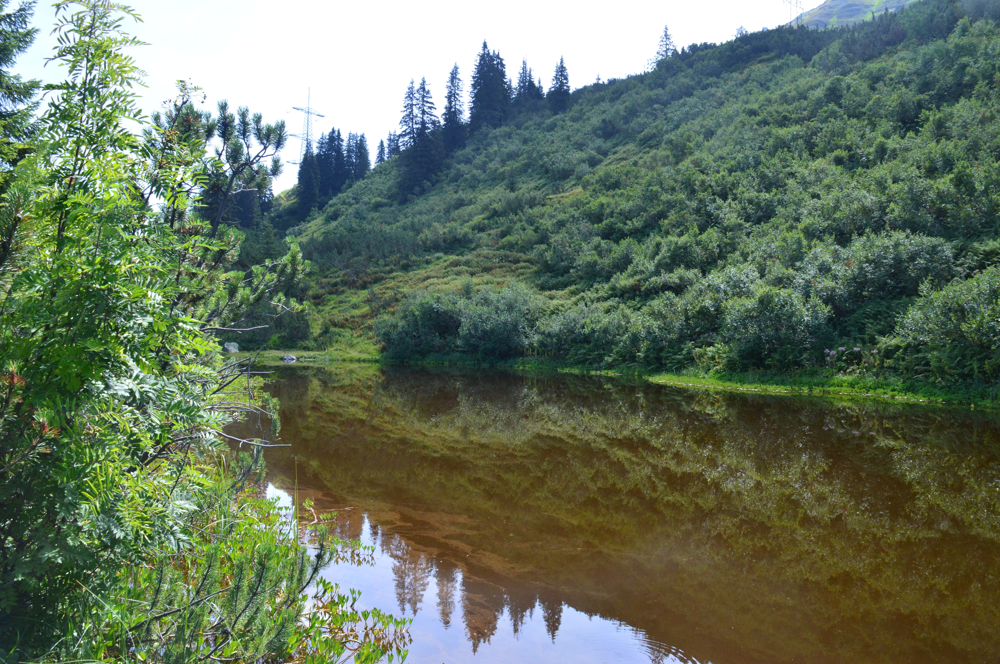

Österreich
Auszeit in den Bergen

„Wir wollen in die Berge“ war der Grundgedanke für diesen Urlaub, welcher aber erstmal sehr viel Interpretationsspielraum ermöglicht. Nach längerem Suchen sind wir in Österreich fündig geworden, um genauer zu sein, in Stuben am Arlberg. Doch auch dieser Urlaub begann mit einer besonderen Anreise. Aufgrund dessen, dass wir erst noch für eine Nacht in unserer Heimat Halt gemacht haben, fuhren wir somit erst 6 Stunden in die Heimat, um dann am Folgetag geschlagene 10 Stunden in einem nicht klimatisierten kleinen schwarzen Auto durch die Sonne nach Österreich zu fahren. Klingt nicht so angenehm? Naja, eigentlich war es super!
Es hatte ein wenig „Roadtrip“-Feeling und man fühlte sich wirklich wie auf einer kleinen Reise. Umso weiter wir in den Süden kamen, desto steiler wurden die Straßen. Stuben selbst erreicht man über eine Art Bundesstraße, welche durch Tunnel einfach nur noch den Berg hinauf führt. Das endete darin, dass wir Tunnel für Tunnel immer weiter runterschalten mussten, da wir sonst das geforderte Tempo von 60km/h einfach nicht mehr schafften. Erst im Ort konnten wir sehen, wo wir da wirklich hochgefahren sind, ein schmales idyllisches Tal zwischen zwei Bergen, welches wir noch viel besser zu Gesicht bekommen sollten.
Stuben selbst ist ein kleines Dorf auf 1410m und umfasst „angeblich“ ca. 88 Einwohner, von denen wir nicht wirklich viel mitbekommen haben. Unser kleines Dorf ist nämlich wirklich überschaubar und lebt vom Tourismus, vor allem Wintertourismus. Dementsprechend waren nur wenige Menschen im Dorf anzutreffen, die, genauso wie wir, zum Wandern hergekommen sind. Als wir dann nach einem kurzen Serpentinen Anstieg im oberen Teil des Dorfs angekommen sind, standen wir auch schon direkt vor unserem Chalet. Unseren Schlüssel bekamen wir, nach kurzen technischen Schwierigkeiten, da ich möglicherweise zu schnell die Tasten gedrückt hatte (*hust*), unseren Schlüssel aus einer Art Briefkasten. Im Raum angekommen, sahen wir als Erstes eine kleine gemütliche Küche, um ein wenig mehr Licht hereinzubekommen, öffneten wir die Vorhänge. Nun sahen wir, dass wir fast in der Mitte des Tals waren und somit einen traumhaften Blick über die Dächer des Dorfes und auf die Berge hatten. Nach einer kurzen Pause überlegten wir, was wir mit diesem angebrochenen Tag nun machen wollen, da wir zwischen 14 Uhr und 15 Uhr angekommen waren. Wir entschieden uns zu einem ersten Spaziergang durch das Dorf, währenddessen wir nach den von Google Maps angezeigten „Läden“ Ausschau hielten. Wir mussten feststellen, dass es eigentlich nur einen kleinen Dorfladen gibt, der Täglich runde drei bis 4 Stunden geöffnet hat, aber natürlich heute Ruhetag hatte, super. Hieß also, wieder zurück ins Auto, den Berg wieder ein wenig hinunterfahren und ins Nachbardorf. Wir fuhren nach Klösterle in dem glücklicherweise ein etwas größerer „Spar“ vorzufinden war, der sogar noch geöffnet hatte. Wir kauften alles Nötige für die Tage ein und beschlossen den Abend ruhig in der Wohnung ausklingen zu lassen.
Bei strahlender Sonne und blick auf die Berge wachten wir am nächsten Morgen auf und bereiteten unsere erste Wanderung vor. Auf der Karte, die wir uns geholten hatten, waren drei verschiedene Schwierigkeiten für die eingezeichneten Wanderstrecken vorhanden Grün, Gelb und Rot wobei Grün quasi Spaziergänge mit der Familie darstellen sollten und Rot besondere Ausrüstung empfahl. Wir wollten am Anfang nicht übertreiben und entschieden uns deshalb für eine gelbe Strecke, für die man zumindest festes Schuhwerk haben sollte. Voller Tatendrang starteten wir die Route am Fuße des Dorfes, welche uns zu einem höhergelegenen See im Tal führen sollte. Wir mussten ein kleines Drehkreuz auf eine Wiese durchqueren, wobei wir nicht verstanden, warum hier ein solcher Eingang existiere. Dies sollte sich erklären, als plötzlich Pferde aus dem Gebüsch kamen, denn diese lebten auf dieser Weide, über die der Wanderweg führt. Nach kurzen Streicheleinheiten und großer Bewunderung der Plastikblume an meinem Rucksack, gingen wir weiter zu einem kleinen, aber vollkommen klaren Teil, in dem ein paar der Bäche des Berges mündeten (dieser sollte später unsere Abkühlung sein). An der nächsten Weggabelung starteten wir unseren (gelb markierten) Aufstieg, der zu dem Zeitpunkt ein leicht nach oben gehender, breiter Wanderweg war. Kurve für Kurve wurde der Weg steiler und schmaler und die Sonne schien direkt auf uns hinab, wir merkten, dass wir vielleicht die falsche Uhrzeit gewählt hatten, doch dafür war es nun zu spät.
Mit einem Lächeln, aber auch bereits einigen Schweißperlen auf der Stirn, suchten wir immer mal wieder die doch eher seltenen Schatten der Büsche, um ein wenig pause zu machen. Wie weit es noch ging, wussten wir nicht, da keine weiteren Schilder mehr auf dem Weg waren und es sowieso nur geradeaus ging. Sichtlich erschöpft kamen wir endlich am „Bergsee“ an, nur um dann die innere Ernüchterung zu spüren. Der „See“ entpuppte sich als recht kleiner See, welcher, wahrscheinlich aufgrund der starken Sonneneinstrahlung, bereits viele Algen produziert hatte und deshalb eher wie ein brauner Tümpel aussah. Der Blick vom See, aber auch während des Aufstieges war wunderschön, auch auf einer Bank mitten auf dem Weg konnten wir das gesamte Tal super überblicken, nur das Ziel war irgendwie nicht wie erwartet. Des Weiteren fanden wir beim See auch endlich wieder ein Schild, welcher nun, logischerweise, Stuben als Ziel unseres Rückweges zeigte, denn der Weg nach oben, war auch der einzige Weg wieder nach unten. Dieses Mal zeigte das Schild aber plötzlich eine rote statt einer gelben Markierung für unseren Weg. Wir lachten über den Aspekt, dass wir genau das Gegenteil von dem getan haben, was wir uns für den Tag vorgenommen hatten, aber naja, wir mussten wieder runter. Der Abstieg war ein wenig entspannter, aber trotzdem anstrengend. Unten angekommen, setzten wir uns an den Teich, um das kalte Wasser zu genießen und die Füße zu entspannen. Nach einer ausgiebigen Pause in der Wohnung und einem abendlichen Spaziergang durch das Dorf endete auch schon unser erster „richte“ Tag in Österreich.